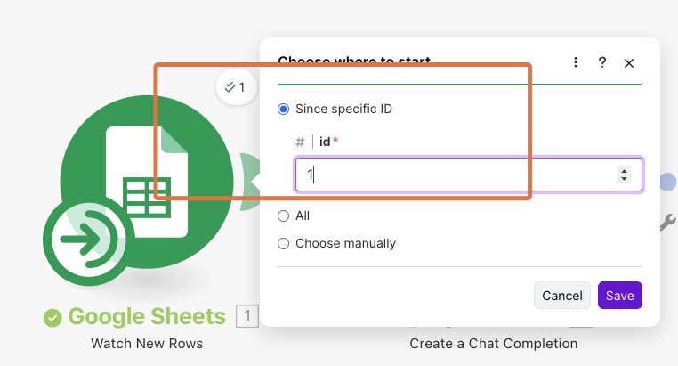
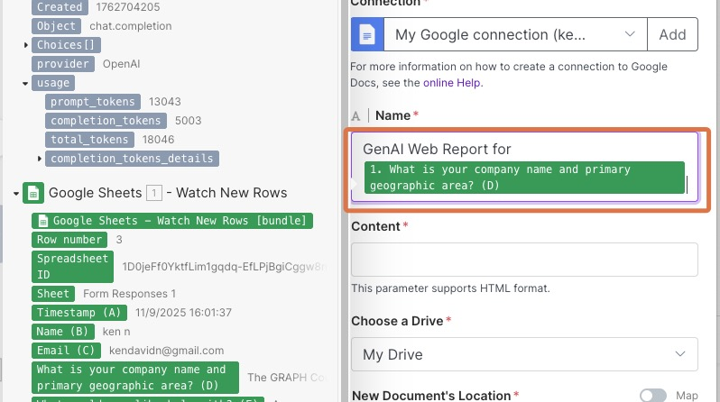
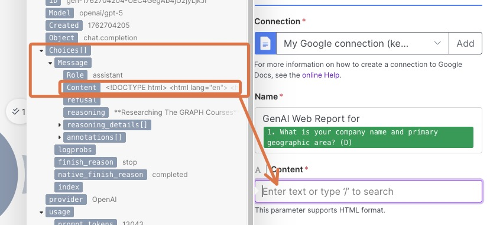
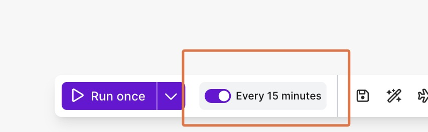
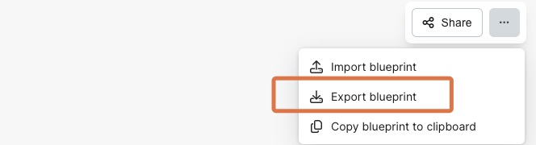

Workshop: Automation with Make.com
Introduction
In this workshop, you’ll create an automated workflow using Make.com that processes consultation inquiries submitted through a Google Form. The automation will:
- Monitor a Google Form for new submissions
- Use an AI model to research the potential client’s company and generate a report
- Create a formatted Google Doc with the research findings
The goal here is to build an extremely simple automation that demonstrates the power of connecting different web services with an AI Large Language Model (LLM). Setting up this automation is quite a bit of work, but the beauty of automations of course is that (in theory) you should only need to set it up once!
In the wild, you will find much more complex automations. Many organizations run a large fraction of their processes using automations on services like Make.com. With the rise of LLMs, these automations can do increasingly complex tasks.
Part 1: Setting Up Your Google Form and Data Collection
Create Your Project Folder
- In your browser, navigate to drive.google.com
- Click New at the top left → then click New folder
- Name the folder something like
GenAI Consultations - Double-click to open the folder

Build Your Consultation Form
Inside the folder, again click New then click on Google Forms to create a new form.
In the title field enter:
Consultation InquirySet up the following form questions:
- Question 1: “Name” (Short answer)
- Question 2: “Email” (Short answer)
- Question 3: “What is your company name and primary geographic area?” (Short answer)
- Question 4: “What would you like help with?” (Paragraph)

- When done, click Publish at the top right to make your form live.
Test Your Form and Connect to Sheets
Click the Share button at the top right, then copy the responder link.
Open the form in a new tab and submit a test response. You are encouraged to fill in data for an organization you know and care about. Here is an example:
- Name:
John Doe - Email:
john.doe@example.com - Company:
The Graduate Institute, Geneva - Help needed:
General advice on how to use GenAI to help students
- Name:
Return to the form editor tab and click Responses. This will show you the responses to your form. You should see a new response in the list.
Click Link to Sheets → Create to generate a connected spreadsheet.
Share the spreadsheet by clicking Share in the top right → Copy link. Copy this link to your clipboard. We will use it in the next section.
Part 2: Setting Up Make.com Automation
Build Your First Module: Google Sheets Watcher
If you have not yet done so, create a Make.com account. Once done, navigate to https://www.make.com/en and sign in.
Click Create a new scenario. This may also be called “Create scenario” or “New scenario”.

- Click the plus button to add a new module, and select Google Sheets

Choose Watch New Rows ACID. This will watch for new rows in the spreadsheet, and trigger when someone fills out the connected form.
Click Creating a connection… → Sign in with Google
You may need to select your Google account and authorize access. Give all requested permissions. (Note that you it is only your automations that have the access, not the entire Make.com service, so you do not need to worry about data security or leakage.)
Now, configure the module settings:
- Spreadsheet ID: Navigate to and select your consultation form spreadsheet. It should be called something like Consultation Inquiry.
- Sheet name: Select “Form Responses 1”
- Limit: Set to
1(processes one response at a time) - Click Save
- If asked where to start, enter
1into the id field → Save

Test the Workflow
Now to test the connection, you need to perform the steps below.
- Right-click on the Google Sheets module
- Click “Choose where to start”

- Enter
1into the id field → “Save”
Note: If you add a second test row during your testing, you would select 2, and so on.

- Click “Run once” at the bottom left

Note that you will need to do this every time you want to test your workflow.
If you get no errors, the workflow is working properly. You will also see the data from the form in the spreadsheet.
Save your work
Make does not save your work automatically. You need to click the Save icon at the bottom after major changes so that in case you refresh the page or lose connection, you do not lose your work.

Part 3: Adding AI Research Capabilities
Set Up OpenRouter AI Module
Click the + button next to the Google Sheets module
Search for OpenRouter and select Create a chat completion

- Click Create a connection, then under Connection Type, select OpenRouter (not OpenRouter Auth2) and enter the openrouter API key that was emailed to you some time ago.
Configure the AI Research Prompt
- Under Messages, click Add item
- In the Content field, paste a prompt that looks something like:
A potential client has filled out a form on my website requesting generative AI consulting services. Research the company/organization below and create a clear, simple, and short HTML report that covers an introduction to the business as well as potential generative AI opportunities for their work.
Use emojis, tables and lists for visual appeal while keeping your writing clear and concise.
If you cannot find online information about the company, just indicate so.
Do not include any prelude or postlude.
Important: Citations and links should only be at the very end of the report, not inside the text!
Now, here is the company name and geographic area from the form:- Right after the prompt (in the same box), click into the text area, and the variable selector should come up. Choose the company name field from your Google Form (e.g., “What is your company name…”)
So each time someone fills out the form, the company name will be added to the prompt, and send to the AI model.
- Set the Role field to User

- For the Model field, first click the “Map” dial, which will allow you to type in any model of your choice. Then in the box, paste in
openai/gpt-5-mini:online.- The
onlinesuffix allows the model to search the internet. So even if the model does know about the company based on its training data, it can still search the internet to research, providing more comprehensive and current information.
- The

- Click Save
Test and Save Your Workflow
Now that you have two modules, you should test the workflow again!
- IMPORTANT: As you did before, right-click the Google Sheets module → Choose where to start → enter
1into the id field → Save - Then click Run once at the bottom left to test the entire workflow
- If you get no errors, then all is working fine.
- Click the Save icon in the bottom toolbar to save your work.
Part 4: Creating Google Docs Reports
Set Up Google Docs Module
- Click the + button to add another module
- Search for Google Docs and select Create a document

- For the document Name, type:
GenAI Web Report forthen select the company name/geographic area variable from your form

- For the Content field, select the AI response from the variable picker:
- Navigate to OpenRouter variables → Choices → Message → Content and click on Content

- Under New document’s location folder, search for and select your “GenAI Consultations” folder
- Click Save
Test and Save Workflow
Run your complete workflow to test again.
IMPORTANT: As you did before, right-click the Google Sheets module → Choose where to start → enter 1 into the id field → Save
If you get no errors, then all is working fine. Click the Save icon in the bottom toolbar to save your work.
Check your Google Drive for the newly created report document. If you’re unhappy with the report, try editing the prompt and rerunning your test until you get an output that works.
Part 5: Activating Your Automation
Congratulations! You’ve now built a complete automation that will process new form submissions automatically! Let’s make it live.
Set Schedule and Activate
Click the Save icon in the bottom toolbar to save your work.
Locate the toggle beside the Every 15 minutes text, and turn the automation on.

Your automation is now live and will process new form submissions automatically (every 15 minutes).
NOTE: The scenario runs every 15 minutes by default, checking for and processing any new form submissions. Keep this frequency during testing so you can see results quickly. However, for production use, consider increasing the interval to every 3 hours or more. Each time the scenario checks for new data counts as one operation, and Make.com’s free plan provides approximately 1,000 operations per month.
Part 6: Embedding the Form in Your Website
Get the Embed Code
- Return to your Google Form
- Click the three-dot menu (⋮) in the top right
- Select Embed
- Copy the provided HTML embed code

Add to Your Portfolio Website
- Go to ChatGPT or your favorite LLM and open your existing portfolio conversation, or copy paste in the index.html code from your page.
- Provide a prompt that looks something like this:
Please update my portfolio website to include this consultation form.
Add a new section called "Contact for Consultation" and embed this Google Form:
[Paste your embed code here]- Update your GitHub Pages website with the LLM’s new HTML code
- Commit/Push the changes to make your consultation form live
Submission
To submit your work:
- Export and upload your scenario blueprint. At the top right, click the three dots and select Export Blueprint.

This contains a file that represents your completed workflow. (This means if you wanted you could share, [or sell!] your workflows!)
- Upload that file to the submission box on the course website.